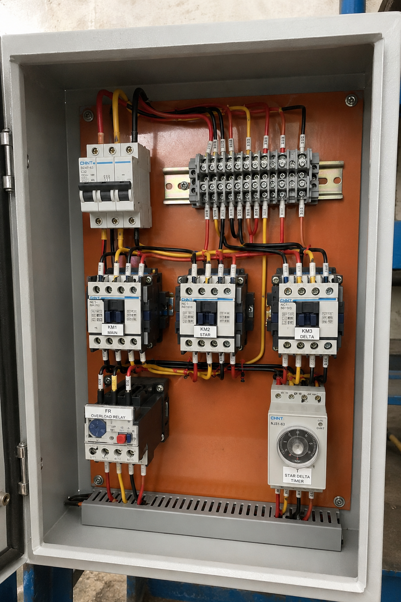
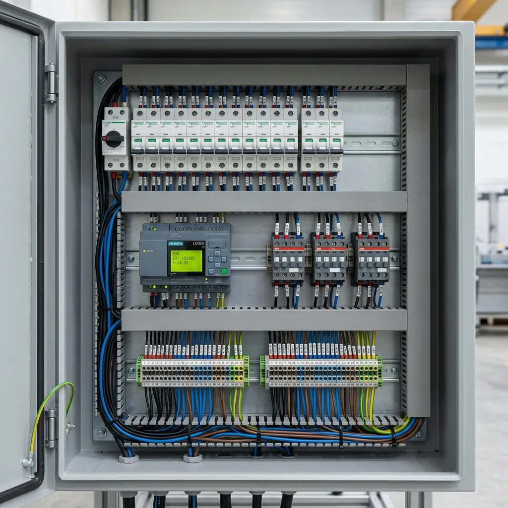

Star-Delta Starter
A physical system built to safeguard industrial power lines by managing the starting current load of induction motors.
This practical circuit installation was awarded a score of 98/100 by the evaluating instructor, recognizing the wiring accuracy, structural layout, and safety interlocking execution.
Industrial electric motors draw large amounts of starting current. Directly starting a motor can draw up to eight times its running current, resulting in significant voltage drops in the power lines.
This project utilizes the Star-Delta starting method to address this surge. By connecting the motor in a Star configuration at startup, the voltage across each winding is reduced, limiting the starting current and torque to 33%. Once the motor reaches speed, it transitions to a Delta connection for full operational power.
Project Gallery
Visual blueprints and component configurations used to build and verify the physical control panel.

